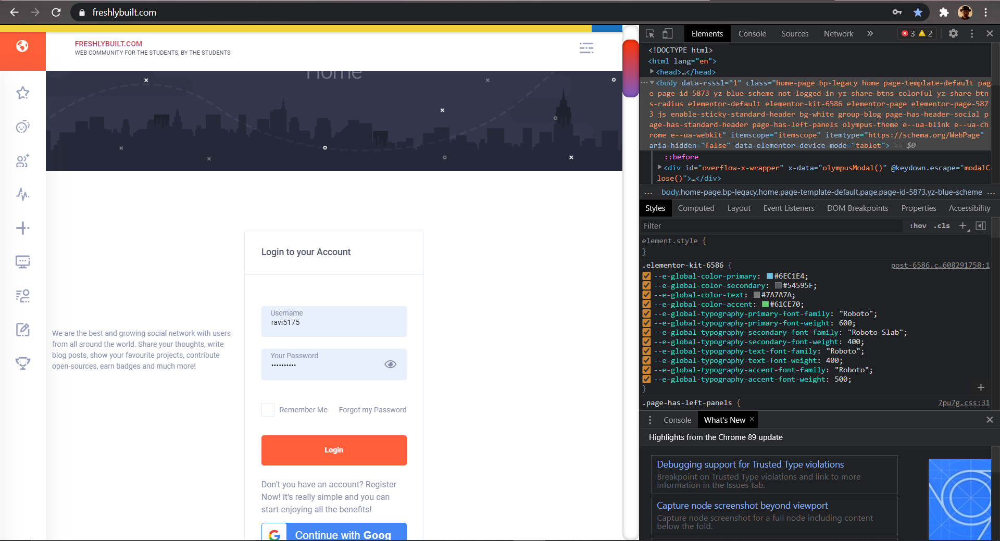
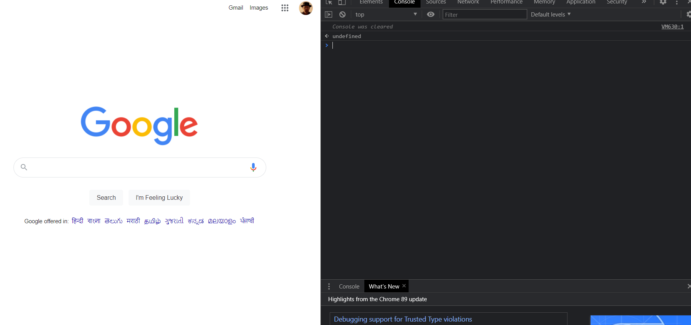
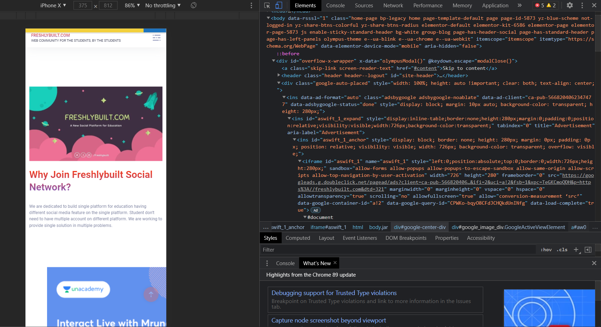
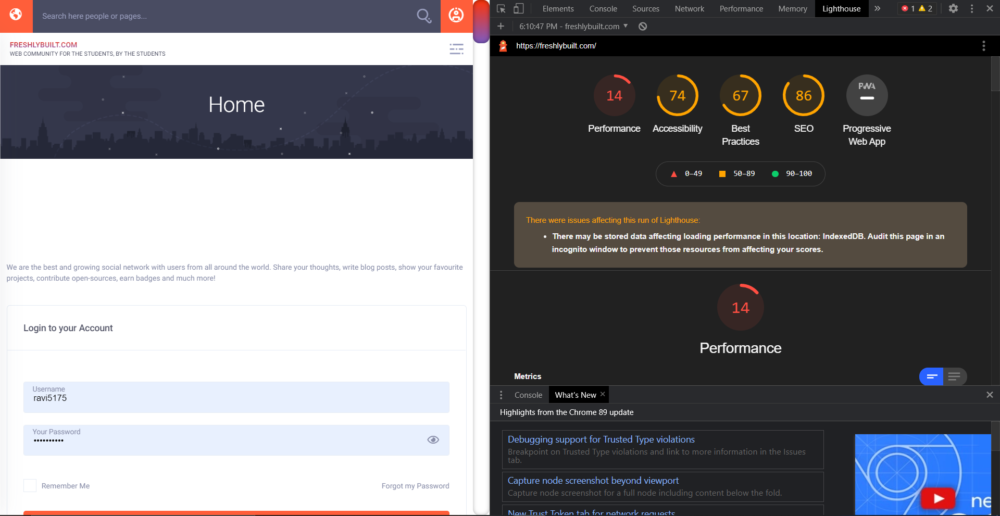
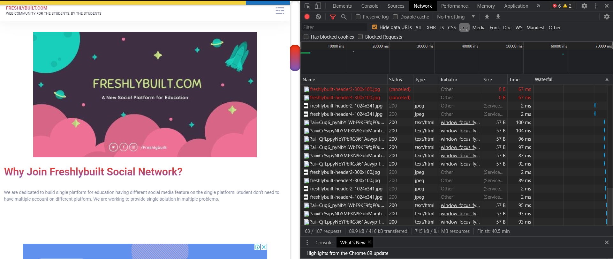
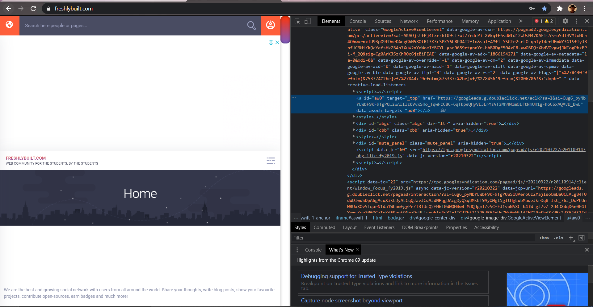
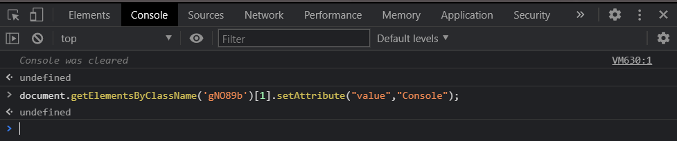

AIM
To Study Web Debugger
REQUIREMENTS
A Web Browser (Google Chrome)
THEORY
Debugging is the process of detecting and removing existing and potential errors (also called ‘bugs’) in a software code that can cause it to behave unexpectedly or crash.
A debugger or debugging tool is a computer program used to test and debug other programs (the "target" program). The main use of a debugger is to run the target program under controlled conditions that permit the programmer to track its operations in progress and monitor changes in computer resources (most often memory areas used by the target program or the computer's operating system) that may indicate malfunctioning code. Typical debugging facilities include the ability to run or halt the target program at specific points, display the contents of memory, CPU registers or storage devices (such as disk drives), and modify memory or register contents in order to enter selected test data that might be a cause of faulty program execution.
Google Chrome is a cross-platform web browser developed by Google. It was first released in 2008 for Microsoft Windows, and was later ported to Linux, macOS, iOS, and Android where it is the default browser built into the OS.The browser is also the main component of Chrome OS, where it serves as the platform for web applications.
Chrome DevTools is a set of web developer tools built directly into the Google Chrome browser. DevTools can help us edit pages on-the-fly and diagnose problems quickly, which ultimately helps us build better web applications, faster.
Starting Chrome Devtools.
- Open a new Tab for the web page of your choice.
- Take cursor on the element of your choice.
- Right click on the element and select inspect element
Other way include shortcut Ctrl+Shift+I to open inspector on chrome dev tools
Fig 1.1 : Chrome devtools on the right side.
Features of Web Debugger
-
Edit HTML and CSS of the Page
You can inspect a DOM node, edit HTML and CSS on the fly and preview the changes by selecting any element, choosing a DOM element within the panel, and double clicking on the opening tag to edit it. The closing tags are automatically updated for you. Any changes will show up in your browser as if the change had actually been made to the source code.
-
Using the Console Panel.
- Debugging JavaScript: A common method for debugging a problem is to insert a lot of console.log() statements into the code, in order to inspect values as the script executes. It will display the message written inside console.log() at the console panel. In addition to viewing console.log() messages.
- Running JavaScript : You can run JavaScript in the Console to interact with the page that you're inspecting.

-
Simulate Mobile Devices with Device Mode in Chrome DevTools
Use Device Mode to approximate how your page looks and performs on a mobile device.
Device Mode is the name for the loose collection of features in Chrome DevTools that help you simulate mobile devices. These features include:
- Simulating a mobile viewport : Set the dimension, device type, add custom mobile.
- Throttling the network : Mid-tier mobile simulates fast 3G and throttles your CPU so that it is 4 times slower than normal. Low-end mobile simulates slow 3G and throttles your CPU 6 times slower than normal. Keep in mind that the throttling is relative to the normal capability of your laptop or desktop.
- Throttling the CPU : To throttle the CPU only and not the network, go to the Performance panel, click Capture Settings, and then select 4x slowdown or 6x slowdown from the CPU list.
- Simulating geolocation
- Setting orientation

-
Optimize Website Speed.
Whenever you set out to improve a site's load performance, always start with an audit. The audit has 2 important functions:
- It creates a baseline for you to measure subsequent changes against.(The baseline is a record of how the site performed before you made any performance improvements.)
- It gives you actionable tips on what changes will have the most impact.

-
Inspect Network Activity
In general, use the Network panel when you need to make sure that resources are being downloaded or uploaded as expected. The most common use cases for the Network panel are:
- Making sure that resources are actually being uploaded or downloaded at all
- Inspecting the properties of an individual resource, such as its HTTP headers, content, size, and so on.
To view the network activity that a page causes:
Reload the page. The Network panel logs all network activity in the Network Log.


Fig 1.2 : Website with Unacademy ad on its home page.
Fig 1.3 : Website with Unacademy ad removed its home page.
Here i hide the element that displays the google adsenseFig 1.4 : Console View (www.google.com).
Fig 1.5 : Running JavaScript to search for element by class “gN089b” and changing value attribute to “Console”.
Fig 1.6 : Output for JavaScript used in Console.
Here i changed the value attribute of “Search” button to “Console” using javascript in devtools console.Fig 1.7 : Debugging website UI in Iphone X screen resolution.
Fig 1.8 : The Audits panel's report the site's performance on Moto G4 device.
Fig 1.9 : Network stats, Images, www.freshlybuilt.com.
Here we run Network diagnostics for images being loaded on the freshly built home page.